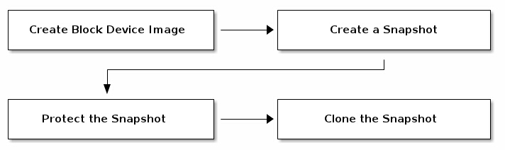
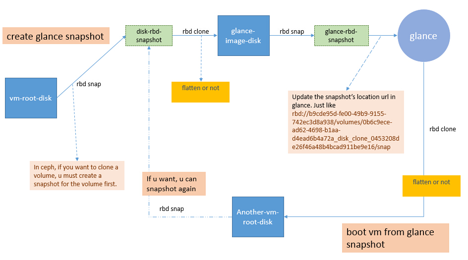
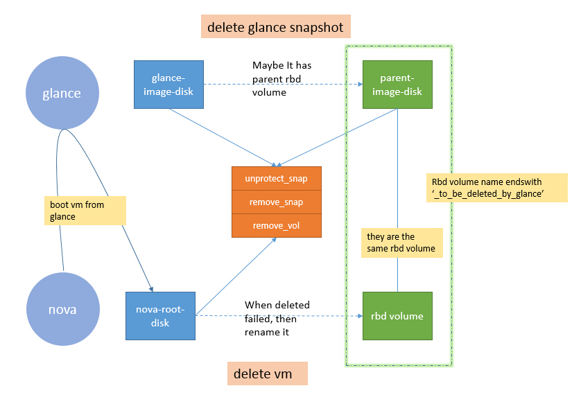

现在比较流行使用ceph作为OpenStack的统一存储，以其较高的性能，较好的融合度，较多的功能特性，受到广大OpenStacker的喜爱和支持。本文讨论一下基于ceph的rbd的虚机如何提升创建快照的速度。
OpenStack的默认快照方式是QEMU的全量快照，之前我写一篇文章介绍过 ( 虚拟机的快照 ) 一些，而这种快照方式我们使用过都知道，速度是非常慢的，尤其是当我们使用了rbd作为虚机的root disk，disk size会非常大，动辄几十个G，这么大的disk做全量快照，速度是可想而知的。
真正的转机来自于使用ceph做统一存储，nova和glance会共用ceph的存储池，而rbd 有没有一种机制可以快速复制一个卷，答案的肯定的。
最终clone的结果就是复制了一个新卷，这个速度是非常快的，因为rbd的LAYERING特性，这个特性本文不做深入探讨。
基于这个特性，我们可以考虑在虚机建快照时，先给虚机root disk做一个rbd snapshot，然后clone这个snapshot生成一个新disk，新的disk我们再做rbd snapshot，这个snapshot就可以给glance，这个过程我们就给虚机做了一个glance快照，流程可以看看下图。
这里需要注意一点，在ceph中rbd clone出来的卷会和被clone卷有一个父子依赖关系，如果你想去除这个依赖关系，可以在图中标注的flatten处做flatten操作，但是flatten的过程是非常慢的，如果你的root disk size比较大，那就有的等了，看自己的需求来取舍吧。
如果我们做了flatten，那么在原始虚机或者glance快照删除的时候，一般不会有什问题，因为flatten后，他们不存在任何依赖关系。如果没做flatten，那么删除的时候需要考虑，rbd snapshot的protection机制，这个机制会锁定相关的disk，导致不能删除，只能解除依赖去除保护后，才能安全删除，流程看下图。
当然逻辑上肯定还有疏漏的地方，很可能会出现rbd中遗留了大量后缀为 _to_be_deleted_by_glance 的卷没能被删除，此时可以考虑起个定时任务去删除它。
这个功能其实在社区中有人提了BP，而且是OpenStack与ceph集成方向的大神级人物Sébastien Han，不过这个BP implement-rbd-snapshots-instead-of-qemu-snapshots 由于错过Juno版本提交的窗口期，所以没被合并，而且里面还有些bug没有处理。
那么我们需要做的工作其实就是在你的版本上合并这部分代码，并修复你认为的BUG。